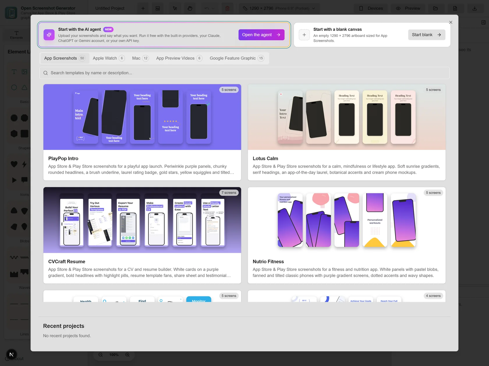
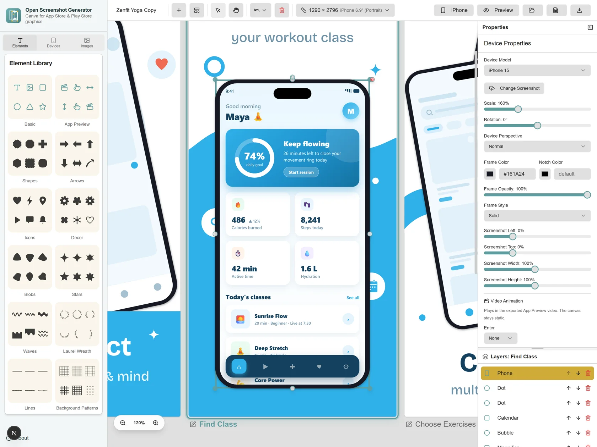
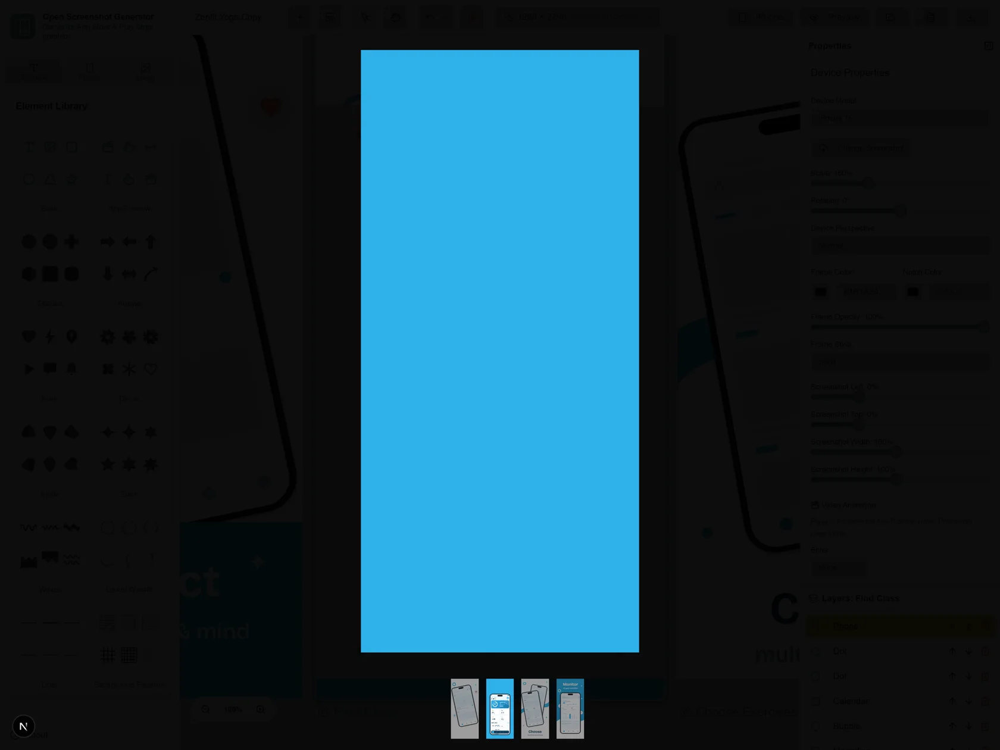
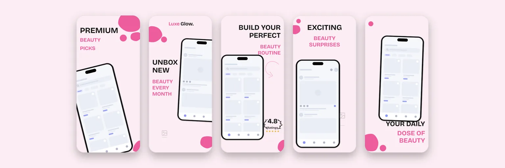
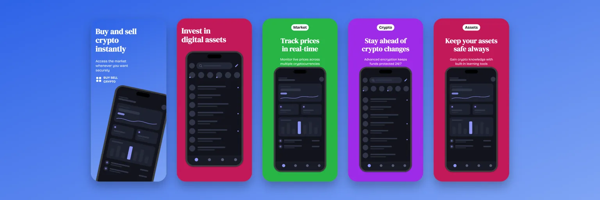
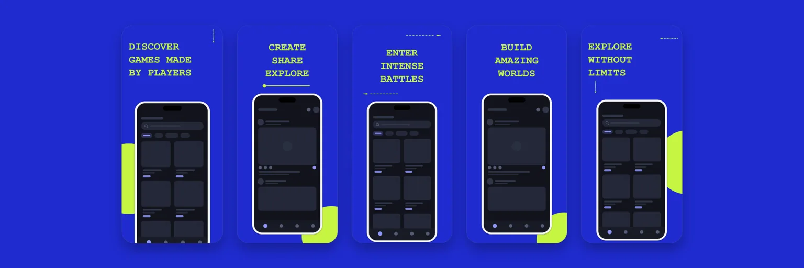
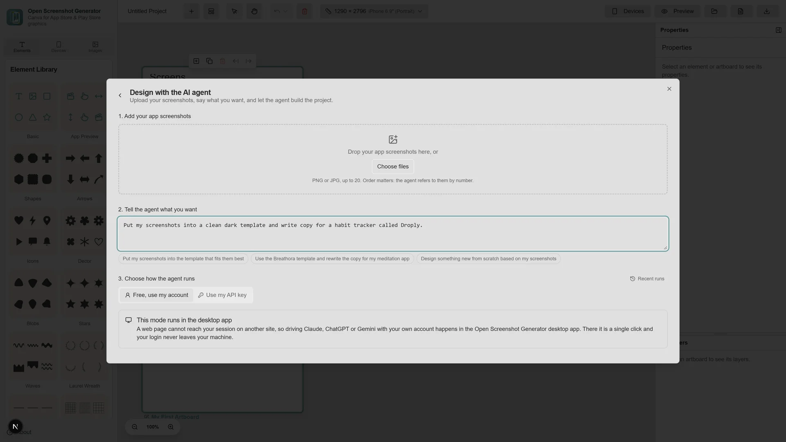

Free. Source on GitHub. Runs in your browser
Make your app impossible to scroll past
Open Screenshot Generator is a design studio for App Store and Play Store graphics. Pick a template, drop in your screenshots, and export every size both stores ask for. Your work stays on your machine unless you invite the AI agent to help
Free forever. No account. No watermark
How it works
Three steps, and that is the whole process
-
Pick a template
Open the gallery and choose a starting point. There are designs for fitness, finance, podcasts, games, chat and plenty more, each one already sized for the stores
-
Drop in your screenshots
Upload screens straight from your phone or emulator. They snap into the device frames and stay clipped to the glass, even when you tilt the phone in 3D
-
Export for both stores
One click renders every artboard at the exact pixel sizes Google Play and the App Store expect. No resizing in another tool and no rejections over pixels



Templates
Start ahead of the blank page
Every set below was designed and exported inside the app. Streaming, meditation, crypto, podcasts, beauty, games. Pick one and make it yours



What you get
A real design tool, not a screenshot stamper
-
Every device that matters
iPhone, Android, tablets, Macs and Apple Watch. Rotate them, scale them, or tilt them into 3D poses. Screenshots stay clipped to the glass whatever you do to the frame
-
Design tools that respect you
Text, shapes, arrows, blobs, speech bubbles and images, all freely placed on artboards with layers and undo across the whole project. A curated set of Google Fonts includes Arabic and Urdu families
-
App preview videos too
Drop a screen recording into a phone frame, dress it with headlines and tap hints, and export an MP4. A second mode conforms your raw capture to exactly what App Store Connect accepts, so uploads stop bouncing. Video export needs a browser with WebCodecs, like Chrome or Edge, and the desktop app always has it
-
An AI agent that does the layout
Hand it your screenshots and one sentence about what you want. It picks a template, places every screen in the right frame, and rewrites the copy for your app
-
Private by architecture
There is no backend. Projects live in your browser storage, exports render on your own machine, and your screenshots never travel unless you hand them to the AI provider you choose. Privacy here is not a policy, it is a missing server
-
Source in the open, browser and desktop
The full source code is public on GitHub. Use it in any modern browser, or grab the desktop app for Windows, macOS and Linux
The AI agent
Upload screenshots. Say what you want. Done
The agent takes your screens plus a sentence like put these in a clean dark template, then chooses the template, fills every frame, and rewrites the headlines for your app. It never draws freehand, so a weak plan gives you an odd design rather than a broken one
- Use my API key Calls go straight from your browser to Anthropic, OpenAI or Google. Your key stays on your machine
- Free, use my account Works with the Claude, ChatGPT or Gemini session you already have open. Fully automatic in the desktop app. In the browser it works through a small companion extension, with a manual copy and paste fallback
- Free, built in The desktop app ships keyless providers, including local Ollama and LM Studio

Nothing leaves your machine
No account. No analytics. No upload. The editor is a static page, your projects live in your own browser storage, and the exports are rendered locally. You could cut your internet after it loads and keep working on the project you have open. The optional AI agent is the one exception, and it only talks to the provider you pick
Your store page could look better tonight
Open the editor, pick a template, and export something you are proud to ship
Questions
Fair questions, straight answers
Is Open Screenshot Generator really free?
Yes. The editor is free. There is no account, no watermark, and no paid tier. The full source code is public on GitHub
Where do my screenshots go when I upload them?
Nowhere. The whole editor runs client side in your browser. Projects and uploads are stored in your browser storage on your own machine, and there is no backend to send them to. That storage is a working copy. Clearing your browser site data deletes it, so treat exported PNGs and MP4s as the real output
Which sizes can it export?
The export flow asks which store and which device classes you are targeting, then renders each artboard to PNG at the required dimensions for Google Play and the App Store, including iPhone and iPad sizes
Can it make App Store preview videos?
Yes. Drop a screen recording into a phone frame, add your headline and tap hints, and export an MP4. A separate mode conforms your raw capture to exactly what App Store Connect accepts, which is 886 by 1920 at 30 fps in H.264. Encoding happens in your browser and nothing is uploaded. Video export uses WebCodecs, which Chrome, Edge and the desktop app support. On other browsers the export stops with a clear message, and PNG export works everywhere
Does the AI agent need an API key?
Not necessarily. You can bring your own key for Anthropic, OpenAI or Google, or use the accounts you are already signed into, like Claude, ChatGPT or Gemini. The desktop app drives the signed in mode automatically. In the browser it works through a small companion extension, with a manual copy and paste fallback. The desktop app also ships keyless providers
Do I need design skills?
No. Templates carry the design decisions for you. Pick one, swap in your screenshots, adjust the words, and export. If you enjoy designing, the full editor with text, shapes, fonts and 3D device poses is there too